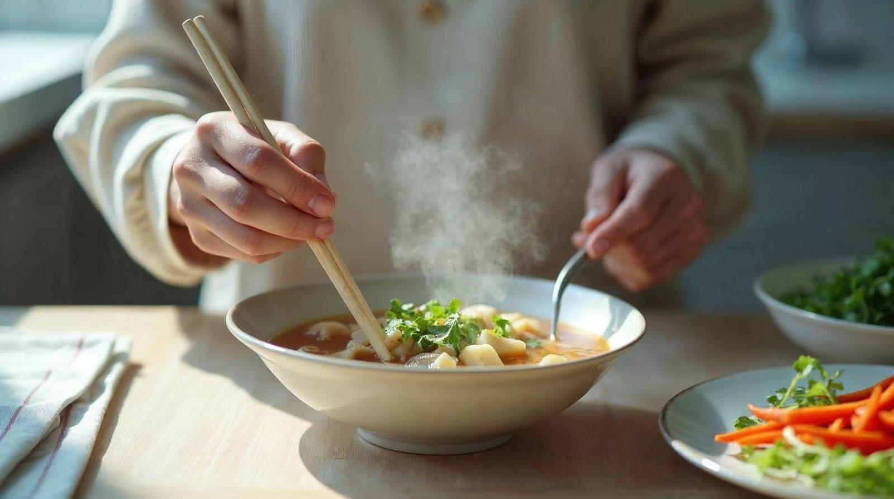
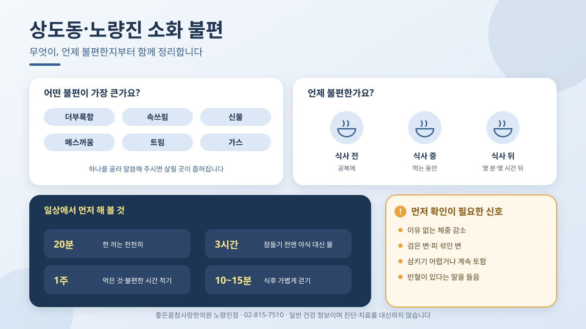

이종호 한의사 감수좋은꿈참사랑한의원 대표원장 (한의사 면허번호 19769)발행 2026-11-22 · 수정 2026-11-26
이 글의 차례
점심을 먹고 자리로 돌아오면 벨트부터 한 칸 풀고 싶어집니다. 밥을 반 그릇쯤 먹었을 뿐인데 명치가 꽉 막힌 듯 묵직하고, 오후 회의 내내 트림이 올라올까 신경이 쓰입니다.
저녁에는 오늘만큼은 가볍게 먹자고 다짐하지만 늦게 퇴근해 허겁지겁 먹게 되고, 누우면 속이 쓰려 몇 번이고 돌아눕습니다. 아침에는 입맛이 없어 빈속에 커피 한 잔으로 하루를 엽니다. 이런 날이 몇 주, 몇 달 이어지면 어느새 소화제가 가방 속 필수품이 됩니다.
진료실에서 이런 말씀을 자주 듣습니다. "원장님, 저는 원래 위가 약해요." "검사에서는 별 이상이 없다는데 속은 계속 불편해요." 그 말 끝에는 대개 작은 한숨이 따라옵니다.
무엇을 먹어도 마음 놓고 먹지 못하고, 밥때가 기다려지기보다 걱정되는 생활이 얼마나 지치는 일인지 짐작이 갑니다. 먹는 일은 하루에 세 번씩 찾아오니, 그때마다 불편하면 하루 전체가 무거워지지요. 그동안 참 많이 애쓰셨을 겁니다.
그래서 저는 소화가 오래 불편한 분께 어떤 불편이, 언제, 무엇을 먹은 뒤 나타나는지를 가장 먼저 여쭙니다. "원래 소화가 약해서"라고 넘기기 쉽지만, 불편해진 시점과 식사·잠·스트레스의 흐름을 들어 보면 단서가 보이는 경우가 많습니다. 다만 이유 없이 체중이 줄거나 검은 변이 보인다면 이야기를 나누기 전에 검사부터 받으셔야 합니다.
왜 속이 불편해질까요
소화는 위 하나가 혼자 하는 일이 아닙니다. 먹는 속도와 시간, 그날의 긴장, 전날 밤의 잠까지 함께 움직이지요. 진료실에서 이야기를 들어 보면 같은 더부룩함이라도 사정이 꽤 다릅니다.
가장 흔한 것은 식사의 리듬입니다. 끼니 시간이 들쭉날쭉하거나 10분 만에 밥을 마시듯 먹는 습관이 있으면, 위가 음식을 받아들이고 아래로 내려보내는 리듬이 흐트러질 수 있습니다. 바쁜 날 한 끼를 건너뛰었다가 저녁에 몰아서 먹는 일이 잦다면 더 그렇습니다.
긴장도 큰 몫을 합니다. 스트레스가 이어지면 위장의 움직임이 예민해지기도 하고 반대로 더뎌지기도 합니다. 발표가 있는 날 아침에 유독 속이 울렁거렸던 기억, 한 번쯤 있으시지요? 그런 날이 하루 이틀이 아니라 몇 달째 이어지는 분들이 생각보다 많습니다.
잠과 야식도 빼놓을 수 없습니다. 잠이 부족하거나 늦은 시간에 야식을 먹는 날이 잦으면 밤사이 위가 쉬지 못해 아침까지 더부룩함이 남기도 합니다. 여기에 진통소염제처럼 위에 부담을 줄 수 있는 약, 커피와 술, 기름진 음식이 더해지면 불편이 커지기 쉽습니다.
한의학에서는 소화를 몸의 온기, 대소변, 잠과 이어진 하나의 흐름으로 봅니다. 배가 자주 차가운지, 손발은 어떤지, 대변은 편한지를 함께 여쭙는 것도 그래서입니다. 속만 들여다보면 놓치는 것들이 몸의 다른 자리에서 보이곤 합니다.
더부룩함인지 쓰림인지, 말로 나눠 보면 보입니다
처음 오신 분께 어떤 불편이 가장 크냐고 여쭈면 "그냥 소화가 안 돼요"라고 하시는 경우가 많습니다. 그 한마디 안에 여러 모양이 섞여 있습니다. 조금만 나눠 보면 살펴볼 방향이 또렷해집니다.
먹고 나면 명치가 꽉 찬 듯하고 조금만 먹어도 배가 부르다면 더부룩함에 가깝습니다. 이때는 식사 속도와 양, 끼니 사이 간격을 먼저 봅니다. 명치가 타는 듯하거나 신물이 목까지 올라오고, 누우면 더 불편해진다면 속쓰림과 신물 쪽입니다. 빈속에 쓰린지 먹은 뒤에 쓰린지, 야식과 커피·술, 진통소염제를 드시는지를 함께 여쭙습니다.
메스꺼움과 트림이 잦다면 긴장한 날이나 기름진 음식을 먹은 뒤에 심해지는지 살핍니다. 배가 살살 아프면서 변이 묽거나 변비와 번갈아 온다면 위보다 장의 리듬 쪽을 생각해 보고, 찬 음식과 스트레스, 잠의 변화를 함께 봅니다.
물론 한 사람에게 여러 모양이 섞여 있는 경우가 많습니다. 그럴 때는 가장 불편한 것 하나와 그다음 것을 순서대로 말씀해 주시면 됩니다.
저는 그 순서를 듣고 나서 몇 가지를 더 여쭙습니다. 식사 전, 식사 중, 식사 뒤 가운데 언제 불편한지, 먹고 나서 얼마 뒤에 시작되는지. 찬 음식, 기름진 음식, 밀가루, 커피 가운데 불편을 키우는 것이 있는지. 대변은 규칙적인지, 바쁜 시기에 더 심해지는지.
그리고 최근 몇 달 사이 체중이 줄었거나 변의 색이 달라지지는 않았는지도 빠뜨리지 않습니다. 마지막 질문은 놓치면 안 되는 신호가 숨어 있지 않은지 확인하려는 것입니다.
이런 분들을 자주 뵙습니다
야근이 잦은 직장인들이 많이 오십니다. 밤 10시가 넘어서야 배달 음식으로 겨우 제대로 된 끼니를 먹고, 다음 날 아침까지 속이 돌덩이처럼 무겁다고 하십니다. 이런 분께는 퇴근 전 저녁 7시 무렵에 간단하게라도 먼저 드시고, 집에서는 가볍게 마무리해 보자고 말씀드립니다.
그리고 일주일 동안 저녁 먹은 시각과 다음 날 아침 속 상태를 나란히 적어 와 달라고 부탁드립니다. 두 줄을 나란히 놓고 보면 본인도 몰랐던 흐름이 드러나는 경우가 많습니다.
시험을 앞둔 수험생도 자주 뵙습니다. 긴장하면 체한 듯 명치가 답답하고, 시험 날 아침이면 변이 묽어져 화장실부터 찾게 된다고 합니다. 이럴 때는 시험 날 처음 먹어 보는 음식은 피하고, 평소 먹던 음식을 같은 시간에 먹는 연습을 미리 해 두자고 권합니다. 긴장과 소화가 함께 흔들리는지를 보는 것이 상담의 출발점이 됩니다.
아이를 키우는 분들 가운데는 아이 밥을 먹이고 남은 것으로 서서 끼니를 때우는 분이 많습니다. 앉아서 먹은 게 언제인지 기억도 안 난다고 웃으시는데, 그 웃음이 마음에 남습니다. 저는 하루 한 끼만이라도 의자에 앉아 20분을 써 보자고 말씀드립니다. 거창한 식단보다 그 20분이 먼저입니다.
연말처럼 회식이 몰리는 때에는 한 주에 두세 번씩 기름진 음식과 술이 이어져 속이 쉴 틈이 없다는 분들도 많습니다. 이럴 때는 회식 다음 날 아침과 점심을 죽이나 국처럼 부드럽고 따뜻한 음식으로 가볍게 하고, 회식이 없는 날에는 야식을 쉬어 속에도 쉬는 날을 만들어 주자고 말씀드립니다.
어르신이 입맛이 줄고 조금만 드셔도 더부룩하다고 하시면, 가족분과 함께 오시는 경우가 많습니다. 식사량이 줄어든 지 얼마나 되었는지, 체중은 어떤지, 드시는 약은 무엇인지를 가족이 함께 적어 두시면 큰 도움이 됩니다. 다만 체중이 눈에 띄게 줄고 있다면 기록보다 내과 검사가 먼저입니다.

오늘부터 식탁에서 해 볼 것
가장 먼저 부탁드리고 싶은 것은 속도입니다. 한 끼를 20분 이상에 걸쳐 천천히 드시고, 한 입 먹을 때마다 수저를 잠시 내려놓아 보세요. 처음에는 어색해도 며칠만 해 보시면 평소 얼마나 빨리 먹었는지 스스로 알게 됩니다.
저녁은 잠들기 3시간 전에 마치고, 그 뒤로는 야식 대신 물 정도만 드시기를 권합니다. 식후에는 바로 눕지 말고 10~15분쯤 가볍게 걸어 보세요. 빈속 커피와 늦은 술자리는 우선 줄여 보시고요.
끼니 시간도 날마다 비슷하게 맞춰 봅니다. 바쁜 날 한 끼를 건너뛰었다가 몰아서 먹는 것보다, 적게라도 제때 드시는 편이 위에는 덜 부담스럽습니다. 찬 음식이나 찬 음료를 먹고 나면 배가 살살 아픈 분이라면 당분간 음료를 실온이나 따뜻한 것으로 바꿔 보시고, 기름진 음식이 불편을 키운다면 저녁보다 점심으로 옮겨 보시는 것도 방법입니다.
그리고 일주일만 기록해 보세요. 먹은 것과 먹은 시각, 불편했던 시간을 짧게 적으면 됩니다. 적다 보면 불편을 키우는 음식이 눈에 들어오기도 합니다.
스스로 한번 돌아보셔도 좋겠습니다. 한 끼를 10분 안에 끝내는 날이 많은지. 잠들기 3시간 안에 저녁이나 야식을 먹는 날이 일주일에 세 번이 넘는지. 빈속에 커피를 마시거나 진통소염제를 자주 드시는지. 바쁘거나 긴장한 날 속이 먼저 불편해지는지.
속이 불편한 날 잠을 설치거나, 잠을 설친 다음 날 속이 더 무거운지. 변이 묽은 날과 굳은 날이 번갈아 오는지. 해당하는 것이 많다고 겁먹으실 일은 아닙니다. 어디부터 손대면 좋을지 알려 주는 표지판 정도로 보시면 됩니다. 한꺼번에 다 바꾸려 하면 그 자체가 또 하나의 스트레스가 되니, 한두 가지만 골라 일주일 해 보시길 권합니다.
얼마나 지켜보고, 언제 진료를 받을까요
과식이나 회식처럼 이유가 분명한 불편이라면 식사를 가볍게 하고 야식을 쉬면서 2~3일 지켜볼 수 있습니다. 생활을 바꿔 보고 2주쯤 지나도 비슷하거나, 한 달 넘게 불편한 날이 되풀이된다면 혼자 참지 마시고 상담을 받아 보세요. 소화제를 일주일에 여러 번 찾게 되었거나 속 때문에 잠을 설치는 날이 늘었다면 더 기다릴 까닭이 없습니다.
이런 증상은 먼저 확인이 필요합니다
- 이유 없이 체중이 줄어드는 경우
- 검은 변이나 피가 섞인 변이 나오는 경우
이런 신호가 있으면 한의원보다 가까운 병원이나 응급실을 먼저 찾으세요.
좋은꿈참사랑한의원에 처음 오시면
처음 오시면 저는 불편의 모습과 시작된 시기부터 여쭙니다. 하루 중 언제가 가장 불편한지, 식사와 잠과 대변은 어떻게 흘러가는지, 요즘 생활에 달라진 일은 없는지 차근차근 듣습니다. 이야기가 길어져도 괜찮습니다. 그 안에 단서가 숨어 있는 경우가 많으니까요.
그다음 양손을 올려 봐 달라고 말씀드립니다. 맥은 모든 분께 짚습니다. 왼쪽과 오른쪽 손목을 번갈아 짚으며 맥이 손끝에 어떻게 닿는지 살피고, 그동안에도 몸이 따뜻한 편인지, 손발은 어떤지 여쭙습니다.
필요하다고 판단되면 혀를 보고 배를 살핍니다. 배를 살필 때는 편히 누우신 상태에서 배를 가볍게 눌러 단단하거나 아픈 곳, 유난히 차가운 곳이 있는지 봅니다. 원내 혈액 검사를 참고하는 경우도 있지만 필요하다고 판단될 때만 하며, 수치에 따른 진단과 약 조절은 내과에서 받으시도록 안내합니다. 모든 분이 같은 검사를 받지는 않습니다.
그렇게 들은 이야기를 모아 침이나 한약 상담 등 지금 상태에 맞는 방법을 함께 정합니다. 진료실을 나서기 전에는 식사와 생활에서 이번 주에 바꿔 볼 것 한두 가지를 같이 정해 드립니다. 다시 오시면 정한 것을 해 보니 어땠는지, 불편했던 시간대가 어떻게 달라졌는지부터 기록을 함께 보며 이어서 여쭙습니다.
오실 때 불편이 시작된 시기와 하루 중 가장 불편한 시간, 최근 일주일의 식사 시간과 불편을 키운 음식, 대변 횟수와 굳기와 보고 나서 시원한지를 적어 오시면 이야기가 한결 빨라집니다.
복용 중인 위장약·진통소염제·아스피린과 영양제, 최근 내시경이나 건강검진 결과지가 있다면 함께 가져와 주세요. 다 적지 못하셔도 괜찮습니다. 빈칸은 진료실에서 함께 채우면 됩니다.
마치며
속이 불편한 날이 길어지면 먹는 일이 즐거움이 아니라 숙제처럼 느껴집니다. "원래 약해서"라는 말로 오래 버텨 오셨다면, 이제는 그 불편이 언제, 어떤 모양으로 찾아오는지부터 함께 들여다보면 좋겠습니다. 이유를 하나씩 알아 가다 보면 손댈 수 있는 곳이 보이기 시작합니다.
오늘 저녁 한 끼만이라도 천천히, 앉아서 드셔 보세요. 그리고 그 끼니 뒤 속이 어땠는지 한 줄 적어 두세요. 다음에 오시면 이번 주에 가장 불편했던 끼니 하나와 그때 드신 시각부터 여쭙겠습니다.
함께 읽으면 좋은 글
- 식사 뒤에 속이 더부룩한 것은 무엇 때문이고, 속쓰림과는 어떻게 다른가요?
- 속쓰림과 신물이 오래 갈 때 어떤 점을 살펴보고, 언제 검사를 받아야 하나요?
- 속쓰림인지 더부룩함인지 헷갈릴 때는 어떤 말로 설명하면 좋을까요?

먼저 확인이 필요한 신호
- 이유 없이 체중이 줄어드는 경우
- 검은 변이나 피가 섞인 변이 나오는 경우
왜 속이 불편해질까요
- 소화는 위 하나가 혼자 하는 일이 아닙니다.
- 먹는 속도와 시간, 그날의 긴장, 전날 밤의 잠까지 함께 움직이지요.
더부룩함인지 쓰림인지, 말로 나눠 보면 보입니다
- 처음 오신 분께 어떤 불편이 가장 크냐고 여쭈면 "그냥 소화가 안 돼요"라고 하시는…
- 그 한마디 안에 여러 모양이 섞여 있습니다.
이런 분들을 자주 뵙습니다
- 야근이 잦은 직장인들이 많이 오십니다.
- 밤 10시가 넘어서야 배달 음식으로 겨우 제대로 된 끼니를 먹고, 다음 날 아침까지…
자주 묻는 질문
만성 소화불량은 한의원에서 어떻게 살피나요?
불편의 모습과 시점, 식사 습관, 대변 상태를 먼저 묻고 잠·스트레스·몸의 온기와 함께 생활 전체의 리듬 속에서 살핍니다.
내시경 검사를 먼저 받아야 하나요?
체중 감소, 혈변이나 검은 변, 삼킴 곤란, 지속적인 구토, 빈혈 같은 경고 증상이 있으면 먼저 병원 검사를 권합니다. 필요하면 검사를 안내합니다.
소화제를 먹고 있는데 진료받을 수 있나요?
네, 복용 중인 약을 모두 알려 주세요. 약은 임의로 끊거나 줄이지 마시고 처방한 의사와 상의해야 합니다.
모든 환자가 같은 검사를 받나요?
아니요. 진맥은 모든 분께 하고, 설진·복진 등은 말씀해 주신 증상에 따라 필요하다고 판단될 때만 더합니다.
스트레스를 받으면 왜 자꾸 체하나요?
긴장하면 위장의 움직임이 영향을 받을 수 있습니다. 그래서 소화 불편을 볼 때 바쁜 시기와 잠의 변화를 함께 여쭙니다.
좋은꿈참사랑한의원은 재진 때 지난번 이야기부터 이어서 여쭙니다. 진료시간과 예약은 오시는 길에서 확인하세요.
어디서 상담받을 수 있나요?
좋은꿈참사랑한의원은 서울 동작구 만양로2길 2 신성빌딩 3층·5층(서울 동작구 상도동, 7호선 상도역 3번 출구 근처)에 있습니다. 한의사 3명(이종호 대표원장, 조영기 수석진료원장, 정원영 진료원장)이 진료합니다. 진료시간은 평일 09:30~20:00(점심 13:00~14:00), 토·일·공휴일 09:30~15:00이며, 방문 전 전화로 확인을 권합니다. 예약은 네이버 예약, 카카오톡 상담, 전화 02-815-7510로 받습니다.
이 글은 일반적인 건강 정보이며 개인의 진단이나 치료를 대신하지 않습니다. 증상이 있거나 복용 중인 약이 있다면 진료를 통해 확인하세요. 치료 효과는 개인마다 다를 수 있습니다.
작성 기준: 일반적으로 알려져 있는 건강 정보를 참고해 정리했습니다(대표원장 감수). 증상 기록은 1~2주 동안 하루 1회, 비슷한 시간에 적어 오시면 지난 상태와 비교하기 쉽습니다.